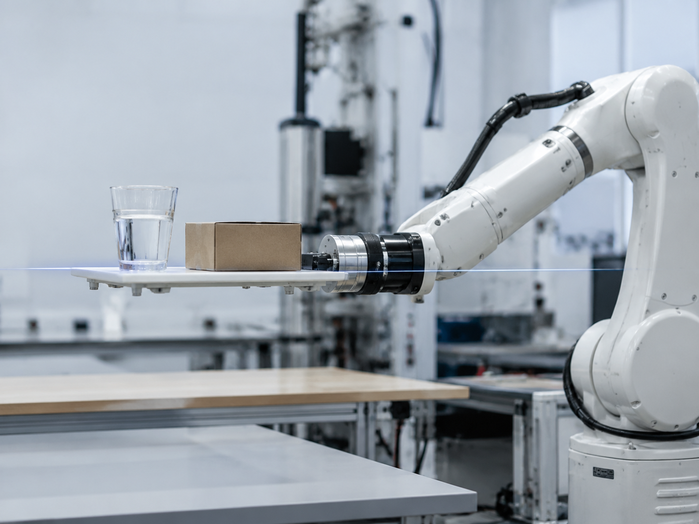
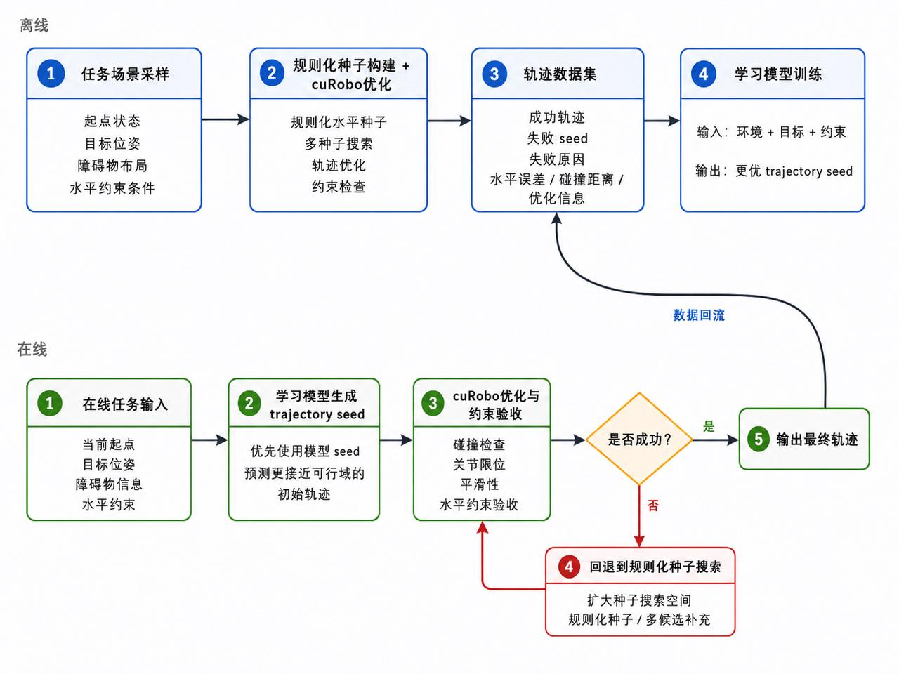

多障碍约束规划
在不同障碍物布局、起终点和水平姿态要求下，检验候选种子覆盖率与优化成功率。
仿真结果图片或视频
待添加
待添加
LEVEL-CONSTRAINED MOTION PLANNING
面向姿态敏感任务的机器人运动规划、优化与持续学习系统。
了解项目 ↓01 / 解决的问题
让机械臂“拿得住”并不难，让它“拿得稳”才是真正的挑战。
我们关注的是，让机械臂在搬运过程中不仅能到达目标位置，还能始终保持末端姿态稳定，例如端着一杯水平稳移动、托盘始终保持水平。


02 / 系统方法
我们围绕这个问题设计了多样化的约束种子轨迹：通过水平姿态插值、连续 IK 分支选择、目标构型变体、twist 分布调整和分段优化，提高候选轨迹对不同可行分支的覆盖能力。
随后，cuRobo 在 GPU 上对这些种子轨迹批量完成碰撞规避、轨迹平滑和目标修复；硬验证器则确保最终轨迹满足姿态、碰撞、限位和动力学要求。
在此基础上，我们进一步构建面向持续演进的学习优化闭环：系统会在仿真与在线规划中记录不同场景下的候选轨迹、优化结果、约束误差和失败原因，并利用这些数据训练条件扩散模型，学习生成更接近可行区域、更容易被优化器修复的轨迹种子。
在线阶段，学习模型根据当前起点、目标、姿态约束和环境快速生成多样候选，再由 cuRobo 与硬验证器完成精修和安全验收；当学习候选未通过时，系统会自动回退至规则种子与原生规划流程。
通过“数据生成、模型学习、优化修复、严格验证、失败回流”的闭环设计，系统能够在不放松安全边界的前提下，持续积累困难任务经验，并逐步提升复杂约束场景下的规划效率、成功率与鲁棒性。
03 / 仿真实验
在不同障碍物布局、起终点和水平姿态要求下，检验候选种子覆盖率与优化成功率。
比较规则种子、学习生成种子与原生规划流程在复杂任务中的效率和成功率。
04 / 实机实验
机械臂在无障碍环境中保持末端水平，完成端水、托盘搬运等姿态敏感任务。
系统在复杂障碍环境下生成满足姿态约束且能够稳定执行的安全轨迹。